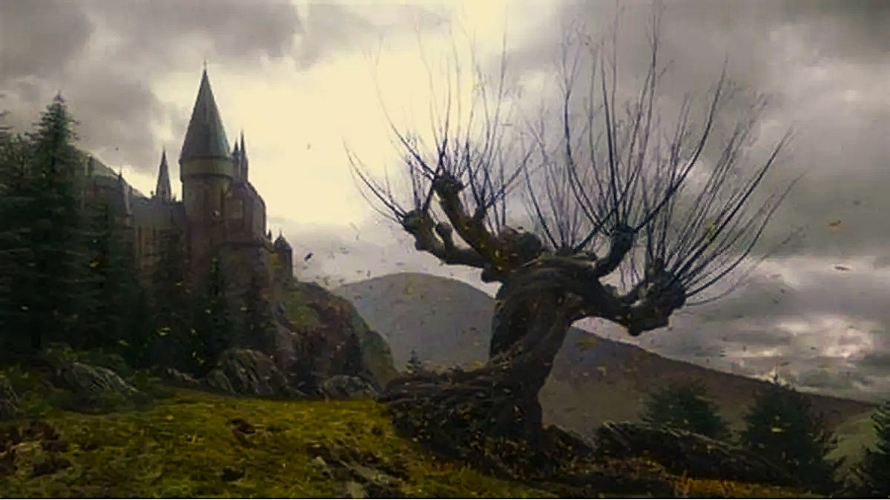

Explore as casas de Hogwarts e conheça suas virtudes, histórias e características.

HARRY POTTER WIKI
GRIFINÓRIA
é a casa dos bruxos conhecidos por sua coragem, nobreza e determinação. Com o leão como símbolo e as cores vermelho e dourado, ela acolhe aqueles de espírito destemido, como Harry Potter e Alvo Dumbledore.
SONSERINA
Misteriosa, ambiciosa e envolta em uma aura de elegância singular, a Sonserina é a casa daqueles que enxergam longe e não temem os caminhos necessários para alcançar a grandeza. Sob as águas escuras do Lago Negro, suas comunais emitem um brilho esmeralda calmo e fascinante, refletindo a astúcia e a determinação de seus membros.
CORVINAL
Sabedoria, curiosidade insaciável e uma mente afiada definem a Corvinal. Pousada no topo das torres mais altas do castelo de Hogwarts, onde o vento sopra livre e a vista alcança o horizonte, a casa acolhe aqueles que veem no conhecimento o maior dos poderes.
LUFA-LUFA
Lealdade inabalável, empatia e um espírito de dedicação sem igual definem a Lufa-Lufa. Localizada próximo às cozinhas do castelo, sua sala comunal é acolhedora, banhada por uma luz dourada e repleta de plantas, transmitindo o calor e o conforto de um lar.